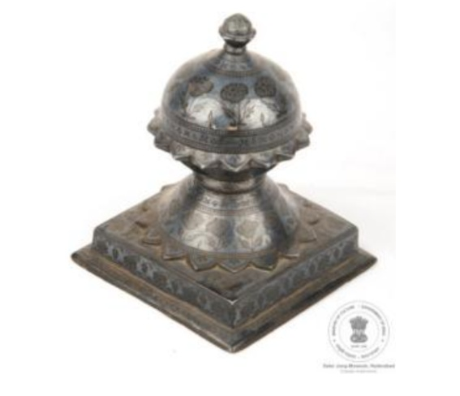

🔇 Is bhasha me is vastu ka audio abhi uplabdh nahi hai.
अभिग्रहण संख्या: ACQ-86-14 मीर-ए-फ़र्श

अभिग्रहण संख्या: ACQ-86-14
मीर-ए-फ़र्श बिदरी कला की एक खोखली कलाकृति है। इसका आकार गुंबद जैसा है, जो चौकोर आधार पर बने उल्टे फूल के ऊपर टिका है। इसके आधार के चारों ओर चौड़ी किनारी बनी हुई है। यह जस्ता मिश्रधातु से बना है तथा इसमें चाँदी और ताँबे का भी उपयोग किया गया है। पूरी वस्तु पर चाँदी की परत चढ़ाई गई है। उस पर फूलों और बेल-बूटों की नक्काशी करके नीचे की काली सतह को उभारा गया है। गुंबद के शीर्ष पर गुलाब की कली बनी है। गुंबद के चारों ओर फूल की पंखुड़ियों जैसी उभरी हुई आकृतियाँ हैं। इसका उपयोग कालीन के कोनों को अपनी जगह पर स्थिर रखने के लिए किया जाता है। यह कर्नाटक के बीदर की बिदरी कला का उत्कृष्ट उदाहरण है और इसका निर्माण 19वीं शताब्दी ईस्वी का माना जाता है।
Acc No: ACQ-86-14 Meer-e-Farsh (Carpet Weight)
Acc No: ACQ-86-14
A hollow, dome-shaped Bidri 'Meer-e-Farsh' resting on an inverted flower atop a square base with extended borders. Crafted from zinc alloy with silver and copper components, the piece is covered with a sheet of silver. Floral and plant decorations are engraved into the sheet to reveal the contrasting black alloy beneath. A rosebud crowns the top of the dome, surrounded by petal-like projections. Used as a carpet weight to hold carpet corners securely in place, it originates from Bidar, Karnataka, India, and dates to the 19th century CE.
7. మీర్-ఎ-ఫార్ష్
Acc No: ACQ-86-14
వ్యాపించిన అంచుతో చదరపు బేస్ పైన విలోమ పువ్వు మీద ఉన్న గోపురం ఆకారంలో హాలో బిద్రి మీర్-ఎ-ఫార్ష్. ఇది వెండి, రాగి భాగాలు మరియు జింక్ మిశ్రమ పదార్థంతో తయారు చేయబడింది. వస్తువు మొత్తం వెండి షీట్తో కప్పబడి ఉంటుంది మరియు శరీరం యొక్క నల్లని భాగాన్ని వెలికితీసే పూలు మరియు పూల మొక్కల అలంకరణ చెక్కబడింది. గోపురం పైభాగంలో గులాబీ మొగ్గ చిత్రీకరించబడింది. తెహ్ గోపురం చుట్టూ పూల రేకులు వంటి ప్రొజెక్షన్ కలిగి ఉంటుంది. దీనిని సాధారణంగా కార్పెట్ మూలలో ఉంచడానికి ఉపయోగిస్తారు. ఇది భారతదేశంలోని కర్ణాటకలోని బీదర్కు చెందినది మరియు క్రీ శ 19 వ శతాబ్దానికి చెందినది.
۷. میر فرش
اندراج نمبر: ACQ-86-14
یہ بیدری میرِ فرش گنبد نما شکل کا ایک فن پارہ ہے، جو مربع بنیاد پر قائم ہے۔ اس کے اوپری حصے میں الٹے پھول کی شکل بنائی گئی ہے، جبکہ بنیاد کے کنارے باہر کی جانب پھیلے ہوئے ہیں۔ یہ چاندی اور تانبے کے اجزا سے تیار کیا گیا ہے اور اس میں جست کے مرکب دھات کا استعمال بھی کیا گیا ہے۔اس پوری شے پر چاندی کی تہ چڑھائی گئی ہے۔ اس کی سطح پر پھولوں اور گل بوٹوں کے دلکش نقش نہایت باریک بینی سے کندہ کیے گئے ہیں، جن کے ذریعے جسم کے سیاہ پس منظر کو خوب صورتی کے ساتھ نمایاں کیا گیا ہے۔ گنبد کے اوپری حصے پر گلاب کی ایک نازک کلی کا نقش بنایا گیا ہے، جبکہ اس کے گرداگرد پھول کی پنکھڑیوں جیسی ابھری ہوئی تراش اسے مزید دل آویز بناتی ہے۔ یہ آرائشی شے عموماً قالین کے کونوں کو اپنی جگہ قائم رکھنے کے لیے استعمال کی جاتی تھی، جس سے اس کی افادیت اور جمالیاتی حسن دونوں نمایاں ہوتے ہیں۔ یہ فن بیدر، کرناٹک، ہندوستان کی مشہور بیدری فن کاری سے تعلق رکھتا ہے اور اس کا تعلق انیسویں صدی عیسوی سے ہے۔
অ্যাক্সেস নং: ACQ-86-14 মীর-ই-ফারশ
अभिग्रहण संख्या: ACQ-86-14
এটি একটি গম্বুজাকৃতির ফাঁপা বিদ্রী 'মীর-ই-ফারশ', যা একটি বর্গাকার ভিত্তির ওপর স্থাপিত উল্টানো ফুলের আকৃতির অংশের ওপর বসানো রয়েছে; ভিত্তিটির কিনারা কিছুটা বাইরের দিকে বর্ধিত। এটি দস্তা বা জিঙ্কের সংকর ধাতু দিয়ে তৈরি এবং এতে রূপা ও তামার উপাদান ব্যবহৃত হয়েছে। বস্তুটির সমগ্র উপরিভাগ রূপার পাত দিয়ে আবৃত এবং এতে ফুল ও লতাপাতার নকশা এমনভাবে খোদাই করা হয়েছে যাতে মূল কাঠামোর কালো অংশটি দৃশ্যমান হয়ে ওঠে। গম্বুজটির চূড়ায় একটি গোলাপের কুঁড়ির প্রতিকৃতি রয়েছে এবং এর চারপাশে ফুলের পাপড়ির মতো অংশ দেখা যায়। সাধারণত কার্পেটের কোণায় এটি ব্যবহার করা হয় যাতে কার্পেটটি যথাস্থানে স্থির থাকে। এটি ভারতের কর্ণাটক রাজ্যের বিদার অঞ্চলের নিদর্শন এবং ঊনবিংশ শতাব্দীর সময়কালের।
Acc No: ACQ-86-14 મીર-એ-ફરશ
अभिग्रहण संख्या: ACQ-86-14
વિસ્તૃત કિનારીવાળા ચોરસ પાયાની ટોચ પર ઊંધી સ્થિતિમાં રહેલા ફૂલ પર ટકેલી ગુંબજ આકારની હોલો (પોલી) બિદરી 'મીર-એ-ફર્શ'. તે ચાંદી અને તાંબાના ઘટકો તથા ઝિંક એલોય (જસતની મિશ્રધાતુ) સામગ્રીમાંથી બનાવવામાં આવી છે. આ সমগ্র વસ્તુ ચાંદીની શીટથી આચ્છાદિત છે અને બાંધાના કાળા ભાગને ઉજાગર કરવા માટે ફૂલો તથા છોડની શણગાર ભાત કોતરવામાં આવી છે. ગુંબજની ટોચ પર ગુલાબની કળી દર્શાવવામાં આવી છે. ગુંબજની ચારેય બાજુ ફૂલની પાંખડીઓ જેવી રચનાઓ છે. તેનો ઉપયોગ સામાન્ય રીતે ગાલીચાને તેની જગ્યાએ જકડી રાખવા માટે ખૂણા પર મૂકવા માટે થાય છે. તે બિદર, કર્ણાટક, ભારતની છે અને ઈ.સ. ૧૯મી સદીની છે.
Acc No: ACQ-86-14 ಮೀರ್-ಎ-ಫಾರ್ಶ್
अभिग्रहण संख्या: ACQ-86-14
ವಿಸ್ತರಿಸಿದ ಅಂಚನ್ನು ಹೊಂದಿರುವ ಚೌಕಾಕಾರದ ಪೀಠದ ಮೇಲೆ, ತಲೆಕೆಳಗಾದ ಹೂವಿನ ಮೇಲೆ ನಿಂತಿರುವ ಗುಮ್ಮಟದಾಕಾರದೊಳ್ಳನೆಯ ಬಿದ್ರಿ ಮೀರ್-ಎ-ಫರ್ಶ್. ಇದನ್ನು ಬೆಳ್ಳಿ ಮತ್ತು ತಾಮ್ರದ ಅಂಶಗಳು ಹಾಗೂ ಸತುವಿನ ಮಿಶ್ರಲೋಹದ ವಸ್ತುವಿನಿಂದ ಮಾಡಲಾಗಿದೆ. ಈ ವಸ್ತುವಿನ ಸಂಪೂರ್ಣ ಭಾಗವನ್ನು ಬೆಳ್ಳಿಯ ರೇಕಿನಿಂದ ಮುಚ್ಚಲಾಗಿದ್ದು, ವಸ್ತುವಿನ ಕಪ್ಪು ಭಾಗವನ್ನು ಹೊರಗೆಡಹಲು ಹೂವುಗಳು ಮತ್ತು ಹೂವಿನ ಗಿಡಗಳ ಅಲಂಕಾರಿಕ ವಿನ್ಯಾಸವನ್ನು ಕೆತ್ತಲಾಗಿದೆ. ಗುಮ್ಮಟದ ಮೇಲ್ಭಾಗದಲ್ಲಿ ಗುಲಾಬಿ മൊಗ್ಗನ್ನು ಚಿತ್ರಿಸಲಾಗಿದೆ. ಈ ಗುಮ್ಮಟವು ಸುತ್ತಲೂ ಹೂವಿನ ಎಸಳಿನಂತಹ ಉಬ್ಬು ಭಾಗವನ್ನು ಹೊಂದಿದೆ. ಇದನ್ನು ಸಾಮಾನ್ಯವಾಗಿ ಜಮಖಾನವು (ರತ್ನಗಂಬಳಿ) ಜಾರದಂತೆ ಹಿಡಿದಿಡಲು ಅದರ ಮೂಲೆಯಲ್ಲಿ ಬಳಸಲಾಗುತ್ತದೆ. ಇದು ಭಾರತದ ಕರ್ನಾಟಕದ ಬೀದರ್ಗೆ ಸೇರಿದ್ದಾಗಿದ್ದು, ಇದನ್ನು ಕ್ರಿ.ಶ. 19ನೇ ಶತಮಾನದ್ದೆಂದು ಅಂದಾಜಿಸಲಾಗಿದೆ.
୭. ମୀର୍-ଏ-ଫର୍ଶ୍
Acc No: ACQ-86-14
ଏକ ଖାଲିଆ ବିଦ୍ରି 'ମୀର୍-ଏ-ଫର୍ଶ୍', ଯାହା ଏକ ବର୍ଗାକାର ଆଧାରରେ ଓଲଟା ଫୁଲର ଉପରେ ରହିଥିବା ଗମ୍ବୁଜ ଆକାରର ଏବଂ ଏହାର ଏକ ବର୍ଦ୍ଧିତ ଧାର ରହିଛି। ଏହା ରୂପା ଏବଂ ତମ୍ବା ତଥା ଜିଙ୍କ୍-ର ମିଶ୍ରଣରେ ନିର୍ମିତ। ଏହି ବସ୍ତୁଟିର ସମସ୍ତ ଅଂଶ ଏକ ରୂପା ଚାଦରରେ ଆଚ୍ଛାଦିତ, ଯହିଁରେ ଶରୀରର କଳା ଅଂଶକୁ ସ୍ପଷ୍ଟ କରିବା ପାଇଁ ଫୁଲ ଓ ଫୁଲ ଗଛର ସାଜସଜ୍ଜାକୁ ଖୋଦିତ କରାଯାଇଛି। ଗମ୍ବୁଜର ଉପର ଭାଗରେ ଏକ ଗୋଲାପ କଢ଼ ଚିତ୍ରିତ ହୋଇଛି। ଗମ୍ବୁଜଟିର ଚାରିପଟେ ଫୁଲର ପାଖୁଡ଼ା ପରି ପ୍ରୋଜେକ୍ସନ ବା ଉଠାଣିଆ ଅଂଶ ରହିଛି। ଏହା ସାଧାରଣତଃ ଗାଲିଚା ତଥା କାର୍ପେଟ୍ କୁ ଠିକ୍ ଭାବରେ ସ୍ଥିର ରଖିବା ପାଇଁ ଏହାର କୋଣଗୁଡ଼ିକରେ ବ୍ୟବହାର କରାଯାଉଥିଲା। ଏହି କଳାକୃତିଟି ଭାରତର କର୍ଣ୍ଣାଟକ ସ୍ଥିତ 'ବିଦର' ସହରର ଏବଂ ଏହା ଆନୁମାନିକ ଖ୍ରୀଷ୍ଟାବ୍ଦ ୧୯ଶ ଶତାବ୍ଦୀର।
७. मीर-ए-फार्श
Acc No: ACQ-86-14
विस्तारित कडा असलेल्या चौरस तळावरील उलट्या फुलावर विसावलेला घुमटाच्या आकाराचा पोकळ बिद्री मीर-ए-फर्श. हा चांदी व तांब्याचे घटक आणि जस्ताच्या मिश्रधातूपासून बनवला आहे. संपूर्ण वस्तू चांदीच्या पत्र्याने आच्छादित असून, मुख्य भागाचा काळा भाग दर्शवण्यासाठी त्यावर फुले आणि फुलांच्या रोपांची नक्षी कोरलेली आहे. घुमटाच्या वरच्या बाजूला गुलाबाची कळी दर्शवली आहे. घुमटाच्या सभोवताली फुलांच्या पाकळ्यांसारखी रचना आहे. याचा वापर सहसा गालिचा जागेवर ठेवण्यासाठी त्याच्या कोपऱ्यांवर केला जातो. हे बिदर, कर्नाटक, भारत येथील असून इ.स. १९ व्या शतकातील आहे.
Acc No: ACQ-86-14 മീർ-ഇ-ഫർഷ്
Acc No: ACQ-86-14
ചതുരാകൃതിയിലുള്ള അടിത്തറയ്ക്ക് മുകളിലായി മലർത്തിവെച്ച പൂവിന്റെ രൂപത്തിൽ വിശ്രമിക്കുന്ന, താഴികക്കുടത്തിന്റെ ആകൃതിയിലുള്ള ഉള്ളുപൊള്ളയായ ബിദ്രി 'മീർ-ഇ-ഫർഷ്'. ഇതിന്റെ ചതുരാകൃതിയിലുള്ള അടിത്തറയ്ക്ക് നീട്ടിയ ഒരു ബോർഡറുണ്ട്. വെള്ളി, ചെമ്പ് ഘടകങ്ങളും സിങ്ക് സങ്കരലോഹവും ഉപയോഗിച്ചാണ് ഇത് നിർമ്മിച്ചിരിക്കുന്നത്. ഈ വസ്തു പൂർണ്ണമായും ഒരു വെള്ളി ഷീറ്റു കൊണ്ട് പൊതിഞ്ഞിരിക്കുന്നു; ഇതിന്റെ പ്രധാന ഭാഗത്തെ കറുത്ത നിറം പുറത്തുകാണിക്കുന്നതിനായി പൂക്കളുടെയും ചെടികളുടെയും അലങ്കാരപ്പണികൾ ഇതിൽ കൊത്തിവെച്ചിരിക്കുന്നു.
താഴികക്കുടത്തിന്റെ മുകളിൽ ഒരു റോസാപ്പൂ മൊട്ട് ചിത്രീകരിച്ചിട്ടുണ്ട്. താഴികക്കുടത്തിന് ചുറ്റും പൂവിതളുകൾ പോലുള്ള പ്രൊജക്ഷനുകൾ കാണാം. കാർപെറ്റിന്റെ മൂലകൾ മടങ്ങിപ്പോകാതെ കൃത്യ സ്ഥാനത്ത് ഉറപ്പിച്ചു നിർത്താനാണ് ഇത് സാധാരണയായി ഉപയോഗിക്കുന്നത്. ഇന്ത്യയിലെ കർണാടകയിലുള്ള ബിദാറിൽ നിന്നുള്ള ഈ വസ്തു എ.ഡി 19-ാം നൂറ്റാണ്ടിലേതാണെന്ന് കരുതപ്പെടുന്നു.
7. மீர்-எ- ஃபர்ஷ்
Acc No: ACQ-86-14
நீட்டிக்கப்பட்ட விளிம்பைக் கொண்ட சதுர அடிப்பகுதியின் மேல், தலைகீழ் மலரின் மீது அமைந்த குவி மாட வடிவவிலான பித்ரி மீர்-இ-ஃபர்ஷ் பொருளாகும். இது வெள்ளி மற்றும் செம்புப் பொருட்களாலும், துத்தநாக உலோகக் கலவையாலும் செய்யப்பட்டுள்ளது. இந்தப் பொருள் முழுவதும் வெள்ளித் தகடால் மூடப்பட்டு, அதன் உடற்பகுதியின் கருநிறப் பின்னணி வெளியே தெரியுமாறு பூக்கள் மற்றும் தாவரங்களின் அலங்காரங்கள் செதுக்கப்பட்டுள்ளன. கோபுரத்தின் உச்சியில் ஒரு ரோஜா மொட்டு சித்தரிக்கப்பட்டுள்ளது. கோபுரத்தைச் சுற்றிலும் பூவிதழ் ஒத்த நீட்சியமைப்புகள் உள்ளன. இது வழக்கமாக ரத்தினக் கம்பளத்தின் மூலைகளை நிலையாக வைத்திருக்க இந்தப் பொருள் பொதுவாகப் பயன்படுத்தப்பட்டது.. இது இந்தியாவின் கர்நாடக மாநிலத்தில் உள்ள பிதர் பகுதியைச் சேர்ந்தது, மேலும் இது 19 ஆம் நூற்றாண்டைச் சேர்ந்ததாகக் கணிக்கப்படுகிறது.